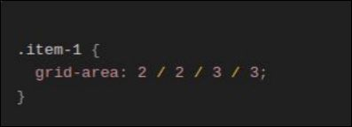
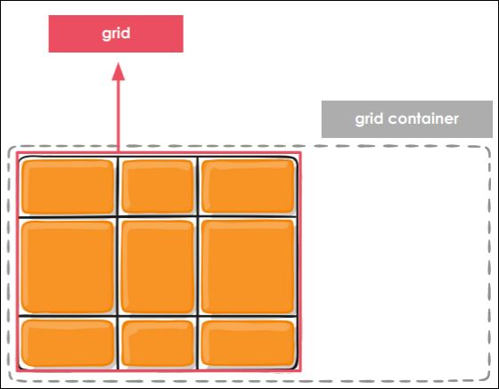
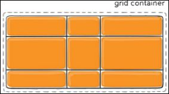
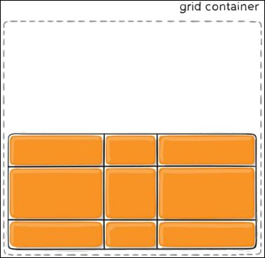

Grid Layout
Grid layout é um sistema de design usado no desenvolvimento web e no design gráfico que permite a
organização de conteúdo utilizando uma grade de linhas e colunas. Esse método é benéfico para criar layouts
estruturados, responsivos e visualmente atraentes.
Grid Layout no CSS
O layout de grade (Grid Layout) do CSS é um sistema de layout bidimensional para a web. Ele permite que você
organize itens em linhas e colunas, facilitando o design de páginas web sem precisar usar floats e
posicionamentos complicados.

Nomenclaturas do grid
HTML

grid columns As faixas verticais dos itens do grid, são chamados de colunas (grid columns)

grid rows As faixas horizontais dos itens do grid, são chamados de linhas (grid rows)
grid gaps Espaços entre as linhas (grid rows) e coluna (grid columns) do grid


Grid Container (Contêiner de Grade): O elemento ao qual se aplica display: grid. Ele é o pai direto de todos
os itens da grade.

Grid Items (Itens da Grade): Os filhos diretos do contêiner de grade.
Grid Lines (Linhas da Grade): As linhas divisórias que definem as células da grade.
Grid Tracks (Trilhas da Grade): As linhas verticais e horizontais que compõem a grade. Elas são formadas
pelos espaços entre as linhas da grade.
Grid Cells (Células da Grade): Os espaços individuais definidos entre duas linhas de grade horizontais e duas
verticais.
Grid Areas (Áreas da Grade): Espaços retangulares na grade que podem ser ocupados por um ou mais itens de
grade.
Adicionando colunas e linhas ao grid
grid-template-columns define as colunas (columns) do grid
grid-template-rows define as linhas (rows) do grid
Unidade de medida fr
Criada para o CSS Grid, a unidade de medida fr representa uma fração do espaço disponível no container do
grid
Função repeat
Permite repetir para todas, ou para algumas das faixas, o mesmo valor para seu tamanho de coluna ou linha.
asdadadasda Função repeat: outros valores
Grid implícito e explícito
Unidade de medida fr
Quando define-se as colunas e linhas através das propriedades
das propriedades grid-template-columns e grid-template-rows,
estamos criando um grid explícito.
Mas, se os itens não couberem, o grid colocará um item fora
desse grid que definimos, criando o que chamamos de grid
implícito.
Propriedade grid-auto-flow
Controla como o algoritmo de reposicionamento automático irá se comportar.
Alocando os itens do Grid nas posições específicas
Grid Lines
Divisórias que compõem a
estrutura da grade.
As linhas entre as colunas são
chamadas de column lines
(linhas de coluna) e, as que
estão entre as faixas
horizontais, são chamadas de
row lines (linhas de linha).
Cada linha possui um
número para que possamos
usar de referência (exceto
para grids implícitos).
Posicionando os itens do grid


Áreas do grid
Shorthand de outras propriedades
Através da propriedade grid-area, nós conseguimos definir os
valores das propriedades grid-row-start, grid-row-end,
grid-column-start e grid-column-end de uma só vez.
Nomeando as áreas
É possível nomear as
áreas do grid e posicionar
os itens dentro das áreas
específicas, as
referenciando através do
nome.
Definindo os espaçamentos dos elementos do grid
Espaçamento entre as faixas do grid
Tamanho das linhas do
grid (grid lines) através
das propriedades
column-gap e row-gap
(ou através da shorthand
gap)
Espaçamento entre as faixas do grid
Os espaçamentos são
adicionados apenas entre
uma linha/coluna e outra.
Valores de justify-items
justify-items: start;
justify-items: end;
justify-items: center;
justify-items: stretch;
Valores de align-items
align-items: start;

align-items: end;
align-items: center;
align-items: stretch;
Alinhando o conteúdo do grid com justify-content e align-content
Container do grid
Container é o elemento
que envolve a grade na
qual estamos criando e,
muitas vezes, ela acaba
sendo maior do que o
grid.

Valores de justify-content
justify-content: start;

justify-content: center;
justify-content: end;
justify-content: stretch;

justify-content: space-around;

justify-content: space-evenly
justify-content: space-between;
Valores de align-content
align-content: start;
align-content: center;
align-content: space-around;
align-content: space-evenly;
align-content: end;

align-content: stretch;
align-content: space-between;
Alinhando itens específicos com justify-self e align-self
justify-self: start;
justify-self: center;
justify-self: end;
justify-self: stretch;
align-self: start;
align-self: center;
align-self: end;
align-self: stretch;